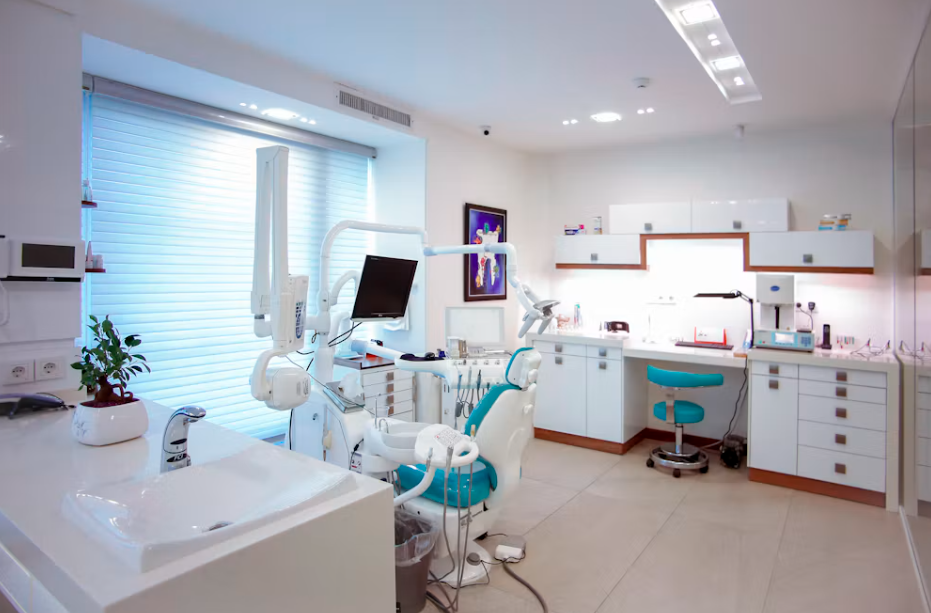

Attention to detail
Careful diagnostics, gentle execution, and a commitment to quality guide our restorative and rehabilitative work.
Confidental Multispeciality Clinic is a dental centre in Chakkumkadav, Kallai, Kozhikode, where clinical attention, advanced technology, and personal care come together around each patient's needs.

Dentistry involves both science and craft. At Confidental Multispeciality Clinic, we bring careful assessment, restorative expertise and open communication into every step of care.
Led by Dr. Sajna, our clinicians consider the whole picture: what a patient is experiencing, what clinical diagnostics show, and which treatment pathways will achieve long-lasting comfort and aesthetics. We aim to make every choice clear and understandable, so patients are empowered partners in their treatment.
Conveniently located at Chakkumkadav, Kallai, Kozhikode, Confidental provides comprehensive restorative, aesthetic, and surgical dental care, with a special emphasis on biomimetic principles that preserve natural tooth structure.
Careful diagnostics, gentle execution, and a commitment to quality guide our restorative and rehabilitative work.
We prioritize conservative approaches that preserve healthy natural tooth structure whenever clinically feasible.
We explain findings and options in plain, friendly language, giving ample time for questions, choices, and comfort.

For us, thoughtful dentistry starts with understanding each tooth and the person behind it. We consider function and appearance together, creating personalized treatment plans that respect your goals.
Biomimetic dentistry reflects this preservation-minded approach. It informs how we think about bonded restorations and the gentle rebuilding of damaged or worn teeth.
Explore biomimetic dentistry →Connect with Dr. Sajna and the Confidental team today.